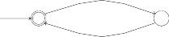
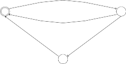
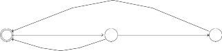
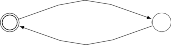
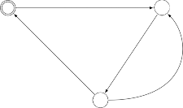
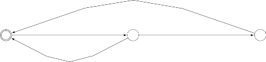
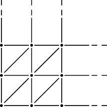
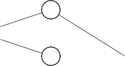
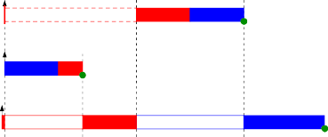

Written examination, May 19, 2017
Course: Modelling and Analysis of Real-time Systems Course no. 02224 Aids allowed: All written works of reference
Exam duration: 2 hours
Weighting: PROBLEM 1: approx. 20 %
PROBLEM 2: approx. 40 %
PROBLEM 3: approx. 40 %
You are encouraged to briefly justify your answers. If you happen to be in doubt about the precise meaning of a question, you should write down how you choose to understand it.

L0
L1
In this problem we consider the following timed automaton Q with two locations: L0 and L1, and one clock time that should used to measure the elapsed time (since system start).
The timed automaton Q
A stay in location L0 lasts for at least one time unit and at most 5 time units.
A stay in location L1 lasts for exactly one time unit.
(a) It is possible that the automaton never stays for more than 2 time units in L0.
(a) It is possible that L1 is entered 3 times within the first 5 time units.
(c) It is inevitable that at most 6 time units elapse from one entry to L1 to the next.
Consider the timed automaton P with three location L0, L1 and L2.
L0
x ≤ 3
x := 0 y ≥ 4
y := 0
L1
y ≤ 6
x := 0
y ≤ 7
L2
y := 0
y ≥ 5

The timed automaton P
Question 2.1: Give a brief description of the timing constraints relating to each of the three locations L0, L1 and L2.
Does P satisfy the query: A<> P.L1?
Does P satisfy the query: A<> P.L2?
Does P satisfy the query: E<> P.L2 and x − y ≤ 5?
Does P satisfy the query: P.L2 --> (P.L1 and y > 0)?
Answers to the above questions must be accompanied with brief justifications.
Question 2.3: There is a run in P having infinitely many visits to L0 and L1 but no visit to L2. How could Uppaal be used to support a formal argument that such a run exists?
For a real-time system to be run on a single-processor computer three periodic tasks a, b, and
c are considered. The tasks have the following parameters:
T | C | |
a | 4 | 1 |
b | 10 | 5 |
c | 32 | 4 |
The deadline of each task is equal to its period. Initially, the tasks are assumed to be independent.
Calculate the load of each task.
Based on the total load, which of the two scheduling principles fixed-priority scheduling (FPS) and earliest deadline first (EDF) can be concluded to be feasible for scheduling the given set of tasks?
In the given system, the set of task is to be scheduled by a preemptive fixed-priority scheduler (FPS) using rate monotonic priority assignment.
Calculate the response time for each of the three tasks.
Now, a shared protected resource M is to be used by all tree tasks. Task a is going to use M for all of its 1 unit of computation time, task b is going to use M for 2 of its its 5 computation time units and task c is going to use M for 1 of its 4 computation time units. For task b, the usage takes place at the end of its computation.
Recall that the blocking time Bt of a task t is the maximum time the task t may experience being suspended while lower priority tasks execute.
State the blocking times of tasks b and c.
Determine the blocking time Ba of task a and illustrate using a scheduling scenario how this amount of blocking may occur.
[Notice that blocking of task a may be subject to priority inversion.]
Explain why the task set using M is not schedulable.
Assume that priority inheritance is applied to the scheduling.
State the new blocking time Bt for each task t, and determine whether the set of tasks has now become schedulable.
Written examination, May 29, 2019
Course: Modelling and Analysis of Real-Time Systems Course no. 02224 Aids allowed: All written works of reference
Exam duration: 2 hours
Weighting: PROBLEM 1: approx. 25 %
PROBLEM 2: approx. 35 %
PROBLEM 3: approx. 40 %
You are encouraged to briefly justify your answers. If you happen to be in doubt about the precise meaning of a question, you should write down how you choose to understand it.

Consider the following timed automaton P with three location L0, L1 and L2.

L0
L1
L2
The timed automaton P
a transition from L0 to L1 is possible just when the automaton has stayed in L0 for at least 6 seconds (use a clock x to express this property),
a stay in L1 lasts at least 3 seconds and at most 7 seconds (the clock x should be reused to express this property),
a transition from L1 to L2 is possible exactly 13 seconds after the most recent entry to location L0 (the initial one included), and
a stay in location L2 lasts for at most 2 seconds.
Does your extension of P satisfy the query: P.L2 --> P.L1? Justify your answer.
Does your extension of P satisfy the query: E<> x>12? Justify your answer.
Does your extension of P satisfy the query: A[] ((P.L1 and x==7) imply (P.L0 or P.L2))? Justify your answer.
Does your extension of P satisfy the query A<> P.L0 and x==3? Justify your answer.
Explain in your own words the meaning of a query of the form: true --> F .
Does your extension of P satisfy the query: true --> P.L0? Justify your answer.
We shall consider the following two timed automata P and Q in this problem.
A x ≤ 2 A
x := 0
B
1 ≤ x
y := 0
y ≤ 2
x := 0
B
1 ≤ x ∧ x ≤ 2
y := 0
y ≤ 2
The timed automaton P The timed automaton Q
Give a TCTL formula in the form of an Uppaal query that distinguishes P and Q in the sense that it is satisfied for P and not satisfied for Q.
[Location propositions may be expressed simply as A or B leaving out the process name.]
Give a TCTL formula in the form of an Uppaal query that distinguishes P and Q in the sense that it is not satisfied for P and satisfied for Q.
[Same remark as in (a) regarding location propositions.]
Provide a solution to (b) without using location propositions. Justify your answer.
Give two states of the transition system underlying the timed automaton P.
Give two transitions of the transition system underlying the timed automaton P, where one transition should be a discrete transition and the other a progress of time.
Illustrate the clock regions for P.
How many clock regions are there? Justify your answer.
What is the maximal number of states the region automaton for P could have? Justify your answer and present three of the states.
Provide two transition of the region automaton for P, where one transition should illus- trate a delay of time and the other a change of location (discrete step).
The questions in this problem can be solved independently of each other.
A real-time system to be run on a single-processor computer has three periodic tasks a, b and
c with the following parameters:
T | C | |
a | 8 | 4 |
b | 12 | 3 |
c | 25 | 5 |
The deadline of each task is equal to its period. Initially, the tasks are considered to be independent.
Calculate the load of each task and the total load of the system.
Determine whether schedulability of the task set using fixed-priority scheduling (FPS) can be guaranteed based on the total load.
In the given system, the set of task is to be scheduled by a preemptive fixed-priority scheduler (FPS) using rate monotonic priority assignment.
Calculate the response time of each task.
Now, two protected, shared resources M1 and M2 are to be used by the tasks as follows: Tasks a and b both use M1 for 1 time unit of their computation time. Tasks a and c both use M2 for 2 time units of their computation time. Task a does not use M1 and M2 at the same time.
Recall that the blocking time Bt of a task t is the maximum time the task t may experi- ence being blocked waiting for lower priority tasks to release resources (not including any preemption by tasks with higher priority than task t).
Explain why the blocking times of tasks b and c are both 0.
Determine the blocking time Ba of task a and illustrate using a scheduling scenario how this worst-case amount of blocking may occur.
[Notice that blocking of task a may be subject to priority inversion.]
Assume that the principle of priority inheritance is applied to the system. Determine the new blocking time Ba of task a. Is the system schedulable under these conditions?
Written examination, May 29, 2020
Course: Modelling and Analysis of Real-Time Systems Course no. 02224 Aids allowed: All
Exam duration: 2 hours
Weighting: PROBLEM 1: approx. 25 %
PROBLEM 2: approx. 35 %
PROBLEM 3: approx. 40 %
You are encouraged to briefly justify your answers. If you happen to be in doubt about the precise meaning of a question, you should write down how you choose to understand it.
In this problem we consider the following timed automaton P with two locations: A and B.

A
x > 0
y := 0
B
x ≤ 1
x := 0 y ≥ 1 The timed automaton P
x ≤ 3
Give two states of the transition system underlying the timed automaton P .
Give two transitions of the transition system underlying the timed automaton P , where one transition should be a discrete transition and the other a progress of time.
A region automaton is a finite automaton constructed on the basis of a timed automaton.
A clock region may be of one of the following types: A point, a bounded line segment, an unbounded half line (ray), a bounded area, or an unbounded area. Present an example of each region type for P .
How many clock regions are there of the different types and how many in total?
Present two states of the region automaton for P .
Provide three consecutive transitions of the region automaton for P , where at least one transition should be a discrete step. [Transitions are consecutive if the end state of one transition is the start state of the next one.]
Let the automaton P t be like P with the A-invariant x ≤ 1 removed. Explain why P t
may not be considered a sound model.
Consider the following timed automaton Q with three locations L0, L1 and L2.
L0 L1

L2
The timed automaton Q
Question 2.1: Extend this automaton Q so that
a stay in L1 lasts for at most 2 seconds (use a clock x to express this property),
a stay in location L2 lasts for at least 3 seconds and at most 5 seconds (the clock
x should be reused to express this property), and
if L0 is left, then L0 must be reentered between 15 and 20 seconds later (use a clock
y to express this property).
Question 2.2: For each of the following Uppaal queries, determine whether it is satisfied by your extension of Q. The answers must be accompanied with brief justifications.
E<> Q.L2
A[] (Q.L2 imply y > 0)
Q.L2 --> Q.L1
A[] (y > 17 imply (Q.L0 or Q.L2 ) )
It is possible that L2 is never reached.
A stay in L1 will always lead to L2.
It is possible that the value of y will never exceed 15.
In L2, the value of y cannot exceed the value of x by more than 17.
For your extension of Q, determine the minimum and maximum number of times the transition from L2 to L1 may be taken from the moment where L0 is left till L0 is reentered again.
How would you use Uppaal to verify these minimum and maximum numbers? Hint: Further extension of Q is allowed.
The questions in this problem can be solved independently of each other.
A real-time system to be run on a single-processor computer has three periodic tasks a, b and
c with the following parameters:
T | C | |
a | 8 | 3 |
b | 20 | 7 |
c | 40 | 3 |
The deadline of each task is equal to its period. Initially, the tasks are assumed to be independent.
Calculate the load of each task and the total load of the system.
Discuss whether schedulability of the task set using fixed-priority scheduling (FPS) can be guaranteed based on the load figures.
In the given system, the set of task is to be scheduled by a preemptive fixed-priority scheduler (FPS) using rate monotonic priority assignment.
Calculate the response time for each of the three tasks. Show all intermediate response time estimates.
Now, a protected, shared resource M is to be used by all three tasks. Each task is always going to use the resource M for exactly 1 of its computation time units C. Furthermore, the usage of M will take place at the end of the computation for each of the three tasks.
Recall that the blocking time Bt of a task t is the maximum time the task t may experience being suspended while lower priority tasks execute.
Explain why the blocking times of tasks b and c are 1 and 0 respectively.
Determine the blocking time Ba of task a and justify your answer. [Notice that blocking of task a may be subject to priority inversion.]
Explain why the task set using M is not schedulable for the given priority assignment.
Show that the task set using M may become schedulable by choosing another priority assignment:
State the new priority assignment, determine the blocking time for each task and cal- culate the response time for each task taking its blocking time into account.
TECHNICAL UNIVERSITY OF DENMARK Page 1 of 3 pages
Written examination, May 31, 2021
Course: Modelling and Analysis of Real-Time Systems Course no. 02224 Aids allowed: All
Exam duration: 2 hours
Weighting: PROBLEM 1: approx. 20 %
PROBLEM 2: approx. 40 %
PROBLEM 3: approx. 40 %
You are encouraged to briefly justify your answers. If you happen to be in doubt about the precise meaning of a question, you should write down how you choose to understand it.
PROBLEM 1 (approx. 20 %)

i
For each of the below Uppaal queries q1, . . ., q4 you should provide two timed automata P t
i
and P f , 1 ≤ i ≤ 4, so that
i
qi is not satisfied by P f and
i
qi is satisfied by P t.
Aim at simple automata constructions.
In the following queries, Q is a placeholder for the automata P t and P f , for 1 ≤ i ≤ 4.
i i
q1: A<> Q.L1 and x > 2.
q2: E[] (Q.L1 and x ≤ 2) or Q.L2.
q3: Q.L1 --> (Q.L2 and x = 2).
q4: A[] Q.L1 imply Q.L2.
Question 2.1:
Construct an untimed automaton A that has
4 locations, named L0, . . . , L3, where L0 is the start location and
5 transitions,
so that every location is reachable from the start location.
Turn A into a timed automaton TA by adding
two clocks, named x and y, each of which must be reset once,
two invariants, and
three guards,
so that every location is reachable also when timing constraints are taken into account. Furthermore, some runs should allow time to progress towards infinity.
Consider now the timed transition system ttsTA underlying the timed automaton TA.
Question 2.2:
Give an informal explanation of the notion state of ttsTA .
Give three example states of ttsTA .
Give an informal explanation of the notion transition of ttsTA .
Give two example transitions of ttsTA , where one should be a discrete transition and the other should be a progress of time.
A timed transition system is in general an infinite state system. Give a brief explanation why this is the case. Illustrate why ttsTA is an infinite state system.
Consider now the region automaton for the timed automaton TA.
Question 2.3:
Give an informal explanation of the notion clock region.
Give examples of the different kinds of clock regions, on the basis of TA.
Give an informal explanation of the notion transition in a region automaton.
Give two examples of transitions in the region automaton for TA, where one should reflect a discrete transition and the other a progress of time.
The region automaton for TA is a finite automaton. Give an explanation why this is the case.
For a real-time system to be run on a single-processor computer four periodic tasks a, b, c, and d are considered. The system is supposed to run a selection of three out of the four tasks. The tasks have the following parameters:
T | C | |
a | 5 | 2 |
b | 16 | 4 |
c | 36 | 6 |
d | 40 | 10 |
The deadline of each task is equal to its period. Initially, the tasks are assumed to be independent.
Question 3.1:
Calculate the load of each task. [In percentages with one decimal.]
Based on these loads, determine for which of selections of three tasks schedulability can be guaranteed for preemptive fixed-priority scheduling (FPS) and explain your results.
For the questions below, the first three tasks, a, b, and c, are selected for execution on the system. Furthermore, these three tasks are to be scheduled by a preemptive fixed-priority scheduler (FPS) using rate monotonic priority assignment.
Question 3.2:
Calculate the response time for each of the three tasks. Show all intermediate response time estimates.
Now, two protected, shared resources M1 and M2 are to be used by the tasks as follows: Tasks a and c both use M1 for 1 time unit of their computation time. Tasks b and c both use M2 for 3 time units of their computation time. Task c does not use M1 and M2 at the same time.
Recall that the blocking time Bt of a task t is the maximum time the task t may experi- ence being blocked waiting for lower priority tasks to release resources (not including any preemption by tasks with higher priority than task t).
Question 3.3:
State the blocking time Bt for each task t and justify your results. [Notice that blocking of task a may be subject to priority inversion.]
Explain why the task set using M1 and M2 is not schedulable.
Explain in your own words the principle of priority inheritance.
Assume that priority inheritance is applied to the system. Determine the new blocking time Bt for each task t and calculate the response times. Is the system schedulable under these conditions?
The constraints are satisfied by the following timed automaton:

x := 0, y := 0
L0
x := 0, y := 0
x ≥ 6 x := 0
x ≥ 3
L1 x ≥ 3 ∧ y = 13
x ≤ 7
x := 0
L2
x ≤ 2
Yes. May stay in L0 for any amount of time.
No. Cannot both be at L1 and at L0 or L2 at the same instant. .
Yes. All paths will start in L0 for at least 6 time units.
In any path, infinitely often F holds.
Yes. Locations L1 and L2 must eventually be left, leading to L0.
A[] A imply x <= 2 OR true --> B
E<> A and x > 2
E<> x > 4
(A, x = 0 ∧ y = 0) and (B, x = 1.5 ∧ y = 0)
(A, x = 1 ∧ y = 1) −0→.5
(A, x = 1.5 ∧ y = 1.5) −→ (B, x = 1.5 ∧ y = 0)

x
2
1
0
0 1 2 y
There are 9 point regions, 6 half-lines, 16 line segments, 8 bounded areas and 5 unbounded areas. In total, 44 clock regions.
With 2 locations and 44 clock regions, the maximum number of states of the region au- tomaton would be 2 × 44 = 88 states.
(A, [0 ≤ x ≤ 1, y = x ]) t−im→e
(A, [x = y = 1]) di−sc→rete
(B, [x = 1, y = 0])
Individual and total loads (utilization):
T | C | U | |
a | 8 | 4 | 50 % |
b | 12 | 3 | 25 % |
c | 25 | 5 | 20 % |
Total | 95 % |
For N = 3 the Liu-Layland criterion is 78 %. Hence schedulability cannot be guaranteed.
[For this exam, the Bini criterion was not used. According to this, the product of 1 + Ui should not exceed 2. For the given tasks, the procduct becomes (1.5 × 1.25 × 1.2) = 2.25. Hence the task set cannot be guaranteed by this criterion either.
Finally, we note that none of the periods are harmonic and hence a the notion of task families is of no relevance.]
For the given tasks, rate monotonic priority assignment yields the order a. b, and c. The response times are then found using the iterative formula:
Rik +1
= Ci +
j ∈ hp(i)
Rik

Cj
Tj
as presented in the following scheme

Task T
C R0 R1 R2 R3 R4 . . .
a | 8 | 4 | 4 | 4 | ||||
b | 12 | 3 | 3 | 7 | 7 | |||
c | 25 | 5 | 5 | 12 | 16 | 19 | 23 | 23 |
Hence, Ra = 4, Rb = 7, and Rc = 23.

1
a
2
1
b
M1
The system may be illustrated by:
2
c
M2
where the numbers on the connections indicate the maximum use of the given resource by the given task.
From this we conclude that Bc = 0 as the lowest priority task can never be blocked by any lower priority task.
Also Bb = 0 as task b does not share any resources with lower priority tasks (here task c).
The worst case blocking time suffering from priority inversion can occur in the following scenario where tasks a and b are released just when task c has acquired the resource M2:

M2
M1
M2
Ba
a
b
c
0 1 2 3
4 5 6 7 8 9 10 11 12 13 14 15
Time
By applying standard priority inheritance, the computation time Cb cannot any longer prolonge the time task a is waiting for M2 which is then only 2. However, now task a may addtionally be blocked on M1 adding 1 to the blocking time so that Ba = 3 with priority inheritance.
As the response time Ra = 4 + 3 = 7 is now within the deadline and as the other response times are unaffected, the scheduling is now feasible.